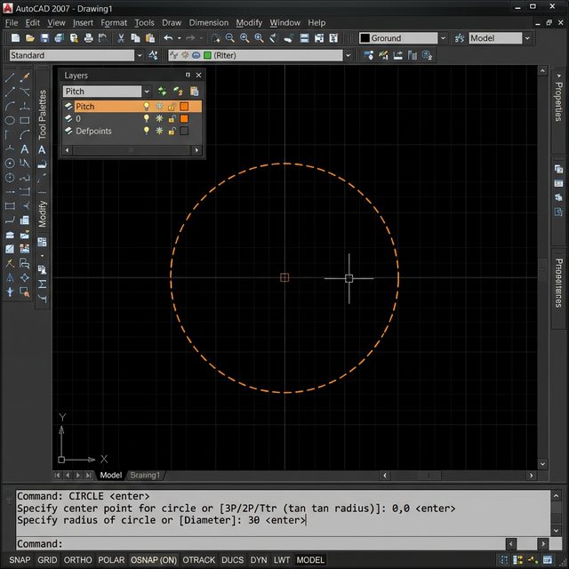
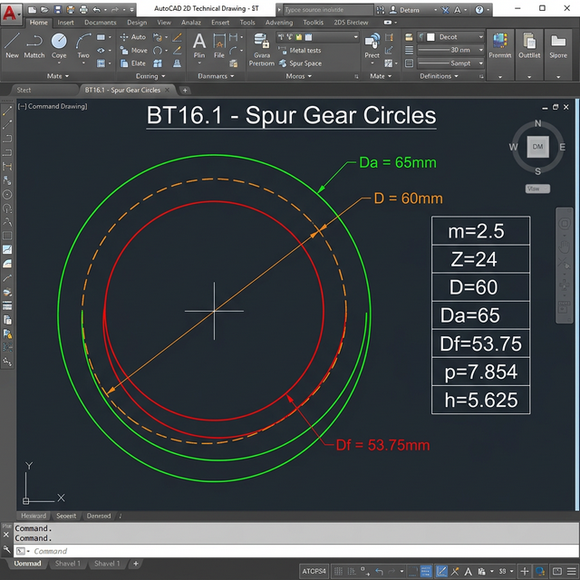
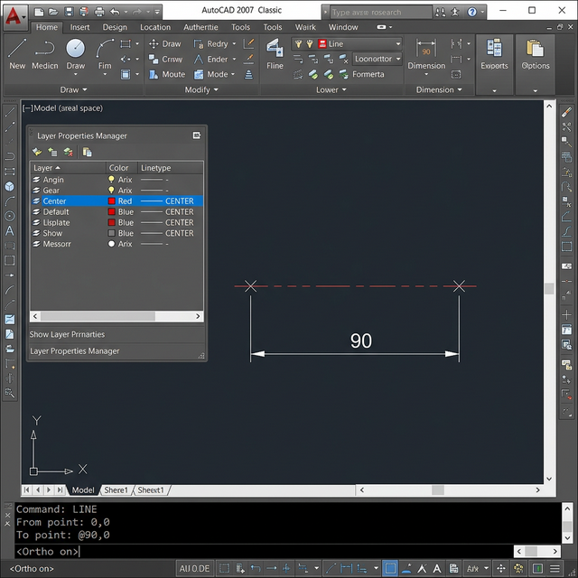
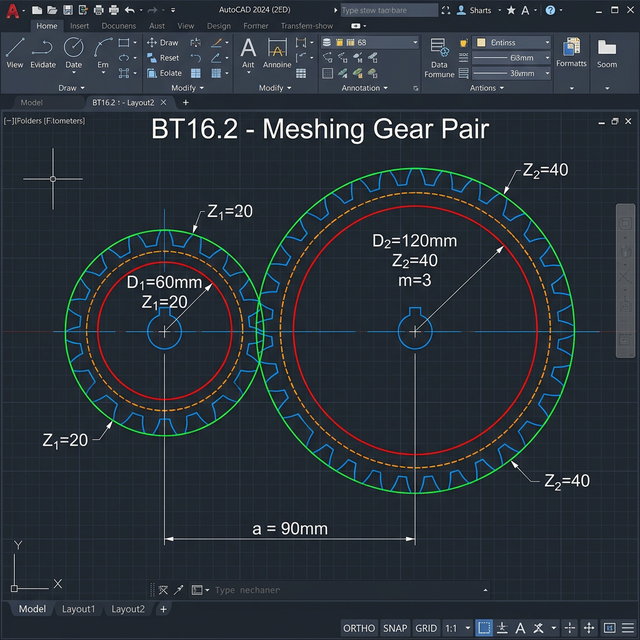
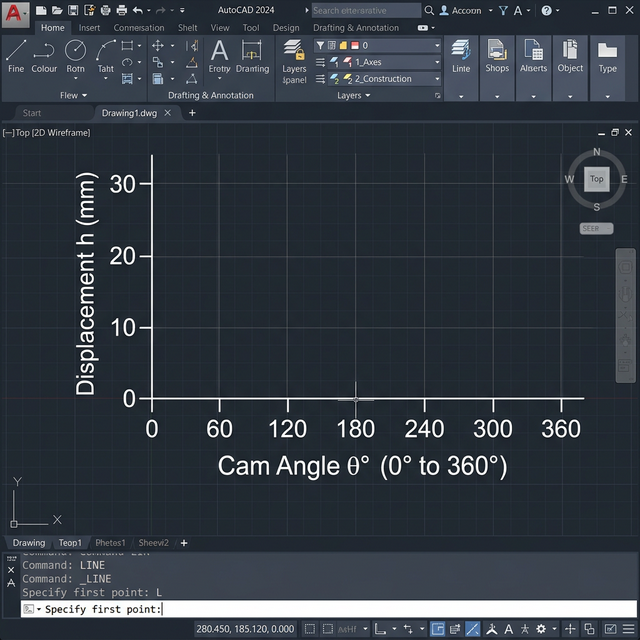
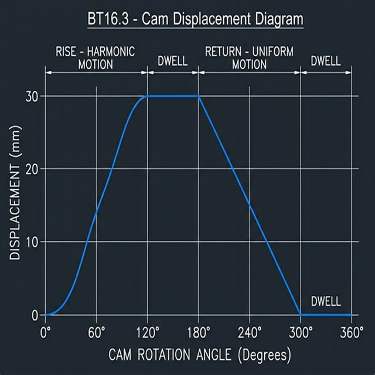

Tính Toán & Vẽ Bánh Răng + Biểu Đồ Cam
Hướng dẫn chi tiết từng bước trong AutoCAD: Công thức tính toán → Vẽ vòng tròn bánh răng → Cặp ăn khớp → Biểu đồ chuyển vị cam.
📋 Tổng quan kiến thức
| Đại lượng | Ký hiệu | Công thức | Ý nghĩa |
|---|---|---|---|
| Đường kính chia | D | D = m × Z | Vòng tròn 2 bánh răng tiếp xúc nhau |
| Đường kính đỉnh | Da | Da = m × (Z + 2) | Vòng ngoài cùng (đỉnh răng) |
| Đường kính chân | Df | Df = m × (Z − 2.5) | Vòng chân răng (đáy rãnh) |
| Bước răng | p | p = π × m | Khoảng cách giữa 2 răng liền kề |
| Chiều cao răng | h | h = 2.25 × m | Từ đỉnh đến chân răng |
| Khoảng cách trục | a | a = m(Z₁+Z₂)/2 | Khoảng cách giữa 2 tâm bánh răng ăn khớp |
⚙️ BT16.1 — Tính toán bánh răng thẳng
Cho: m = 2.5, Z = 24 → Tính D, Da, Df, p, h → Vẽ 3 vòng tròn
Bước 1: Tính toán các thông số
| Thông số | Công thức | Thay số | Kết quả |
|---|---|---|---|
| Đường kính chia (D) | m × Z | 2.5 × 24 | D = 60 mm |
| Đường kính đỉnh (Da) | m × (Z + 2) | 2.5 × 26 | Da = 65 mm |
| Đường kính chân (Df) | m × (Z − 2.5) | 2.5 × 21.5 | Df = 53.75 mm |
| Bước răng (p) | π × m | 3.14159 × 2.5 | p = 7.854 mm |
| Chiều cao răng (h) | 2.25 × m | 2.25 × 2.5 | h = 5.625 mm |
Bước 2: Thiết lập Layer
── Tạo các layer:
Layer "Pitch" → Màu Orange (30) → Linetype: CENTER (nét chấm gạch)
Layer "Addendum" → Màu Green (3) → Linetype: Continuous (nét liền đậm)
Layer "Dedendum" → Màu Red (1) → Linetype: Continuous (nét liền mảnh)
LINETYPE → Load → Chọn file acad.lin → Chọn CENTER.Bước 3: Vẽ vòng chia (Pitch Circle)
Command: C ↵ (CIRCLE)
Specify center point: 0,0 ↵
Specify radius or [Diameter]: D ↵
Specify diameter: 60 ↵

30 thay vì chọn Diameter.Bước 4: Vẽ vòng đỉnh (Addendum Circle)
Command: C ↵
Specify center point: 0,0 ↵
Specify radius or [Diameter]: D ↵
Specify diameter: 65 ↵
Bước 5: Vẽ vòng chân (Dedendum Circle)
Command: C ↵
Specify center point: 0,0 ↵
Specify radius or [Diameter]: D ↵
Specify diameter: 53.75 ↵
Kết quả BT16.1
Kết quả: 3 vòng tròn đồng tâm tại gốc (0,0) với màu sắc và kiểu nét phân biệt.

Bước 6 (Nâng cao): Ghi kích thước
Select arc or circle: (click vòng đỉnh)
Dimension text = 65 → kéo ra ngoài
── Lặp lại cho vòng chia (D=60) và vòng chân (Df=53.75)
🔗 BT16.2 — Cặp bánh răng ăn khớp
Cho: Z₁ = 20, Z₂ = 40, m = 3 → Tính khoảng cách trục a → Vẽ 2 vòng chia tiếp xúc
Bước 1: Tính toán thông số 2 bánh răng
| Thông số | Bánh 1 (Z₁=20) | Bánh 2 (Z₂=40) |
|---|---|---|
| Đường kính chia D | D₁ = 3×20 = 60mm | D₂ = 3×40 = 120mm |
| Đường kính đỉnh Da | Da₁ = 3×22 = 66mm | Da₂ = 3×42 = 126mm |
| Đường kính chân Df | Df₁ = 3×17.5 = 52.5mm | Df₂ = 3×37.5 = 112.5mm |
Bước 2: Thiết lập vị trí tâm
Command: POINT ↵
Specify a point: 0,0 ↵ (Tâm O₁)
Command: POINT ↵
Specify a point: 90,0 ↵ (Tâm O₂)
── Vẽ đường trục nối 2 tâm (Layer Center)
Command: L ↵
From point: -10,0 ↵
To point: 100,0 ↵ → ↵

Bước 3: Vẽ 3 vòng tròn — Bánh 1 (tại O₁)
Command: C ↵ → Center: 0,0 → Diameter: 66 ↵
── Layer "Pitch" (Nét chấm gạch cam)
Command: C ↵ → Center: 0,0 → Diameter: 60 ↵
── Layer "Dedendum" (Nét liền đỏ)
Command: C ↵ → Center: 0,0 → Diameter: 52.5 ↵
Bước 4: Vẽ 3 vòng tròn — Bánh 2 (tại O₂)
Command: C ↵ → Center: 90,0 → Diameter: 126 ↵
── Layer "Pitch"
Command: C ↵ → Center: 90,0 → Diameter: 120 ↵
── Layer "Dedendum"
Command: C ↵ → Center: 90,0 → Diameter: 112.5 ↵
Kết quả BT16.2
2 vòng chia tiếp xúc nhau tại điểm ăn khớp. Khoảng cách trục a = 90mm.

DIST đo khoảng cách 2 tâm → kết quả phải = 90mm. Dùng LIST kiểm tra bán kính từng vòng tròn.📈 BT16.3 — Biểu đồ chuyển vị cam
Rise 30mm (0°-120° Harmonic) → Dwell (120°-180°) → Return (180°-300° Uniform) → Dwell (300°-360°)
Phân tích 4 pha chuyển động
🔼 Rise (Nâng)
0° → 120°
Harmonic Motion
h: 0 → 30mm
Đường cong Sin
⏸ Dwell (Dừng)
120° → 180°
Đứng yên
h = 30mm
Đường ngang
🔽 Return (Hạ)
180° → 300°
Uniform Motion
h: 30 → 0mm
Đường thẳng xiên
⏸ Dwell (Dừng)
300° → 360°
Đứng yên
h = 0mm
Đường ngang
Bước 1: Vẽ hệ trục tọa độ
── Trục Y: 30mm = 30mm thực
Command: L ↵ (LINE — Trục X)
From point: 0,0 ↵
To point: 360,0 ↵ → ↵
Command: L ↵ (LINE — Trục Y)
From point: 0,0 ↵
To point: 0,35 ↵ → ↵ (cao hơn 30 một chút)

Bước 2: Đánh dấu các mốc góc
Command: L ↵ → From: 120,0 → To: 120,35 ↵ → ↵
Command: L ↵ → From: 180,0 → To: 180,35 ↵ → ↵
Command: L ↵ → From: 300,0 → To: 300,35 ↵ → ↵
Command: L ↵ → From: 360,0 → To: 360,35 ↵ → ↵
── Vẽ đường ngang mốc h=30mm
Command: L ↵ → From: 0,30 → To: 360,30 ↵ → ↵
Bước 3: Vẽ pha Rise — Harmonic (0°→120°)
Với H = 30mm, β = 120°. Tính h tại mỗi 15°:
| θ (°) | π×θ/β | cos | h (mm) |
|---|---|---|---|
| 0 | 0 | 1.000 | 0.00 |
| 15 | π/8 | 0.924 | 1.14 |
| 30 | π/4 | 0.707 | 4.39 |
| 45 | 3π/8 | 0.383 | 9.26 |
| 60 | π/2 | 0.000 | 15.00 |
| 75 | 5π/8 | −0.383 | 20.74 |
| 90 | 3π/4 | −0.707 | 25.61 |
| 105 | 7π/8 | −0.924 | 28.86 |
| 120 | π | −1.000 | 30.00 |
Command: L ↵
From: 0,0 ↵
To: 15,1.14 ↵
To: 30,4.39 ↵
To: 45,9.26 ↵
To: 60,15 ↵
To: 75,20.74 ↵
To: 90,25.61 ↵
To: 105,28.86 ↵
To: 120,30 ↵ → ↵
SPLINE thay LINE cho đường cong mượt hơn. Vẽ xong có thể dùng PEDIT → Fit để làm mượt polyline.Bước 4: Vẽ pha Dwell (120°→180°)
From: 120,30 ↵
To: 180,30 ↵ → ↵
Bước 5: Vẽ pha Return — Uniform (180°→300°)
Command: L ↵
From: 180,30 ↵
To: 300,0 ↵ → ↵
Bước 6: Vẽ pha Dwell cuối (300°→360°)
From: 300,0 ↵
To: 360,0 ↵ → ↵
Kết quả BT16.3

Bước 7 (Nâng cao): Ghi chú và hoàn thiện
Command: MT ↵
First corner: 30,34 ↵ → 110,38 ↵
Text: RISE (Harmonic) ↵
── Lặp lại cho: DWELL, RETURN (Uniform), DWELL
── Ghi mốc góc trên trục X bằng TEXT
Command: DT ↵ → Tại (0,-3): 0°
Command: DT ↵ → Tại (120,-3): 120°
Command: DT ↵ → Tại (180,-3): 180°
Command: DT ↵ → Tại (300,-3): 300°
Command: DT ↵ → Tại (360,-3): 360°
BT16.2: Tính a=90mm. Vẽ 6 vòng tròn (3 cho mỗi bánh), 2 vòng chia tiếp xúc.
BT16.3: Vẽ biểu đồ cam 4 pha bằng LINE. Rise dùng bảng giá trị Harmonic sin.